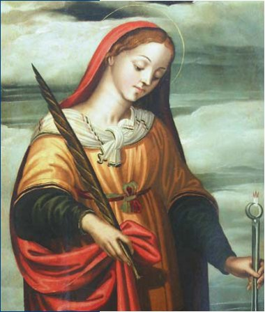
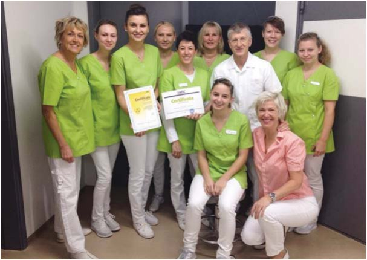

День стоматолога · журнал «ДентАрт» 2014 №1 (74)
Лікар — теж Людина
DOCTOR IS ALSO A MAN
— Що найголовніше в Людині?
— Руки? Розум? Серце?
Одні скажуть — руки. Руками вона створює все, що свідчить про її існування, і вносить зміни в середовище. Якби у Людини не було цих здібностей, її присутність на нашій планеті не мала б сенсу.
Інші скажуть, що це розум. Під керівництвом розуму рухаються руки. Розум розглядає і оцінює результати своєї діяльності і управляє впровадженням у життя знань, отриманих шляхом оцінки, — поліпшує навколишнє.
Але ми скажемо — це Серце Людини.
Серце спрямовує інтерес Людини і дає усвідомлення цінностей.
Серце дає натхнення для діяльності розуму і критерії, за якими розум робить оцінку.
Серце спрямовує розум на добро, на підтримку і поліпшення добра.
Серце зупиняє руку, яку веде безум.
— Яка частина наукової діяльності є найціннішою?
Одні скажуть — проведений експеримент, отриманий результат і його публікація, впровадження в життя.
Ми скажемо: натхненник наукової діяльності — прагнення Серця в зростанні уподібнитися здібностям Більших Сердець. Це причина, чому вчений береться за роботу. Вона визначає цінність або повну безглуздість кожного дослідження і його результату.
Одні скажуть — не важливо, який дослідник, його характер і природа, його мораль і моральність. Не важливо, яким було його виховання. Важливі лише записи результатів його досліджень. Вони скажуть: тільки ці записи якимось чином змінять реальність і збагатять спадщину знань Людства.
Ми скажемо так — покладене в основу визначає весь шлях подальшого розвитку та застосування, його життя і кінцевий результат. Те, яким шляхом буде просуватися застосування результатів досліджень і які будуть його наслідки, великою мірою визначають характер, природа і якості Психічної Енергії дослідника і його співробітників.
Виховання, мораль і моральність дослідника визначають як характер пошуків, так і хід досліджень, а також і те, що він помічає у своїх спостереженнях, що залишає без уваги, і найбільшою мірою — інтерпретацію отриманих даних: його висновки і подальші кроки в науковій діяльності.
Отже, ми можемо запитати:
— Що лежить в основі діяльності лікаря?
— Чи це його знання?
— Його працездатність?
— Чи це його Людські якості — його стимули до діяльності, його вдача і природа його Психічної Енергії, керованої його Серцем?
— Чи це прагнення його Серця робити добро, допомагати тому, хто потрапив у біду, випромінювати життєдайну силу свого Серця там, де порушено потік Життя?
Ми скажемо, що це сутність Психічної Енергії — підтримувати Життя скрізь, де воно є, і робити це всіма засобами, які тільки існують у Безмежності. Кожна якість і кожна форма Психічної Енергії знаходить свій шлях, своє поле діяльності і канал потоку. Ми це можемо називати покликанням або професійною придатністю тоді, коли каналом, полем діяльності та шляхом насичення є Людина.
І також можна запитати:
— Чому є геніальні, здібні, просто хороші лікарі, так само як і зовсім нездалі медики?
— Чому з одного навчального закладу приходять і в одній лікарні працюють настільки різні співробітники?
— Чому в одного викладача його слова схоплюють на льоту, а інший повинен втовкмачувати їх у голови своїх вихованців?
— Чому одному лікареві достатньо з'явитися в палаті, щоб його хворі вже відчували себе краще, а в іншого хиріють роками?
— Чому один лікар може поставити діагноз під час бесіди, а іншому не допомагають складна техніка і обстеження?
— Чому прийоми одного лікаря неповторні і він сповнений невичерпної енергії, а інші скаржаться на щоденну рутину і спустошення душі (вигоряння)?
Тому, що тут ми бачимо взаємодію різних якостей Психічної Енергії в різних стосунках: гармонійних, тих, які доповнюють чи взаємно ослаблюють, войовничих і дисгармонійних. Дію сильної, розробленої, розвиненої або недисциплінованої і нерозвиненої Психічної Енергії. Тут ми бачимо відмінність Психічної Енергії високоморальної та доброзичливої Людини від характеру Психічної Енергії егоїстичної і зануреної у відособленість особистості.
Тут ми бачимо об'єктивний показник — оцінку праці Серця Людини. Тут ми бачимо той вплив, який одне Серце Людини і енергія, випромінювана ним, чинять на іншу Людину, її Серце, працю і життя. Тут ми бачимо, як Людина сама створює себе і свою долю.
У наші дні нікого не треба переконувати в тому, що ми всі пов'язані в Єдиному Житті, душі і свідомості. Нікому не треба доводити, що ми всі — взаємозалежні частини цілого. Усьому живому, кожній частині живого притаманні своя пульсація життя і його ритм. Усе Життя вібрує, колишеться, перебуває в битті і дзвенить. Кожною вібрацією, хвилею і кругообігом управляє Серце. У кожного і у всього є Серце. Кожне Серце у своєму ритмі з'єднується з усіма іншими Серцями в Безмежності Всесвіту. Усі Серця звучать у Музиці Сфер. Через кожне Серце від Серця до Серця линуть потоки і ритми всіх Сердець.
Кожне Серце отримує послання всіх великих і малих Сердець і передає їх далі через себе.
— Як же чиєсь Серце, настільки щедро обдароване любов'ю і підживлене, може відчувати втому, самотність, пригніченість, виснаження і думати про своє вигоряння?
— Як же, отримуючи настільки могутню силу, у носія такого Серця його хворі можуть відчувати брак життєвих сил?
— Так чому ж пацієнти одного зубного лікаря ніколи більше не скаржаться на зубний біль, а пломби, що їх поставив інший, випадають через тиждень?
Тому, що професійний рівень не визначають рейтинг закінченого навчального закладу чи партійна приналежність міністра, на його підвищення впливають не тільки курси підвищення кваліфікації та вміння застосовувати новітні технології. Приріст кількості лікарів і засобів лікування не означає автоматичного зменшення кількості хвороб і того, що пацієнти, котрі живуть довше, щасливіші і захищеніші у своєму житті.
Ритм Серця Єдиного Життя потрапляє до кожного свого чада через численні, вельми різні канали — Серця. Вони відрізняються і за дією — видами ритму, і за об'ємом дії — величиною, і за їх якостями. У кожної величини свій простір дії. Чим більше Серце, тим більший простір і різнобічність — спектр менших Сердець — воно охоплює. Чим більше Серце, тим більше Космічних потоків воно вловлює і тим ширше застосування його дії. Таке Серце вміє поєднати те, що здається непоєднуваним, і розв'язати те, що здається нерозв'язним. У нього різносторонніше застосування, тому воно живить ширше коло менших і вузькоспеціалізованих биттів.
Серце кожної Людини є таким биттям, яке служить певному виду енергії. Хтось оре, сіє і жне, хтось дерево саджає або обробляє, хтось кує, хтось співає, ще хтось у далеких краях подорожує, той малює, той будує чи Батьківщину захищає, а ще хтось інший їх усіх лікує. Те Серце, яке може лікувати, не може добре робити те, що роблять інші, а інші ніколи не зможуть добре лікувати. Того, хто є в цьому світі Лікарем, таким робить його Серце. І ніхто інший його місце не може зайняти, бо тоді той, хто отримав диплом лікаря, освоїв технології і виконує всі вказівки міністерства, помножить страждання своїх пацієнтів і їх невіру в здатність лікарів їх полегшити. Також і Лікар, що освоїв іншу професію, може бути заможним і добре забезпеченим, але ніколи не буде щасливим, бо його Серце вдень і вночі буде кликати його до тих, хто перебуває під заступництвом життєвих сил його Серця.
Кожне маленьке Серце свої життєві сили отримує від іншого Великого Серця через носіїв і провідників його потоків — співробітників цього Серця. Тоді, коли потоки Серця Лікаря стикаються із Серцем пацієнта, в нього вливається весь вміст Серця Лікаря. Пацієнт отримує думки, турботи, переживання та прагнення Серця Лікаря. Чим дихає лікар, тим насичується і пацієнт. Лікар визначає всю подальшу течію життя свого пацієнта. Саме ясність Серця і чистота думок лікаря уздоровлюють хворого. Якість Психічної Енергії лікаря вносить у свідомість хворого відсутню гармонію, і тоді хворий сам розуміє походження своєї хвороби і разом з лікарем усуває її причини і рецидиви. Або ж отруюється корисливістю вузькосердечності і стає хронічним відвідувачем поліклініки. Велич Серця Лікаря — щедрість і якість випромінюваної ним Психічної Енергії — найліпша оздоровча програма для народу. Моральність Лікаря — це універсальні ліки, панацея від усіх хвороб. Ці неспростовні істини, які не потребують доказів, є достатньою основою для перегляду всіх справ, планів і стратегій усіх міністерств.
Скільки Лікарів буде у лікарських кабінетах і наскільки великими і сильними будуть їхні Серця, наскільки розвиненими будуть їхні Психічні Енергії, настільки великим і здоровим буде ними опікуваний народ.
Кожне Серце, щедро передаючи далі життєві сили, само черпає з цього невичерпного потоку. Кожне, передаючи далі, отримує дари вдячності і примноження своїх здібностей. Таке Серце отримує більше, ніж здатне витратити для власного блага. Воно росте в різнобічності, у красі та силі здібностей. Таке Серце встановлює все нові і нові зв'язки у Всесвіті, отримує нові ритми, енергії та допомогу інших просторів.
— Як же тут відчувати себе вигорілим-спустошеним?
— Як може з'явитися спустошення там, де такий достаток життєвих сил?
— Як з'являється така епідемія?
Вигорання — це втрата своїх накопичень Психічної Енергії у хвилях хаосу створеної навколо дисгармонії і виснаження життєвих сил у вузькосердечності. Керовані забобонами відмовляються від своєї роботи і покликання Серця і, займаючи інше професійне поле, тим самим відбирають у свого Серця його робочий простір, потік життєвих сил, створюють дисгармонію і хвилі хаосу. Ті, кого долають турботи про матеріальне благополуччя, засмічують і загороджують канали свого Серця і відокремлюють його від ритму і джерел потоку Єдиного Життя. Ті, хто вступає у відособленість, конкуренцію за краще місце і клопоти про власний прожиток, зачиняють себе в стіни голоду, які самі звели. Таке Серце, перебуваючи в Океані достатку, страждає від спраги і виснаження.
Будь-яка психічна енергія виливається з пошкодженої посудини. Психічна Енергія вимагає найширшого співробітництва. Там, де заводяться корисливість і відособленість, немає місця для Психічної Енергії і простору для її діяльності.
Там, де люди починають говорити і думати про своє власне благо, починається епідемія вигорання.
Там, де люди переступають норми взаємин, починається мор вигорання.
Там, де люди відмовляються від ритму Природного Порядку у праці і допускають хвилі Хаосу, вони згорають на вогнищі своєї дисгармонії.
***
Космічні Закони Охороняють.
Космічні Закони вказують місце, час і співмірність.
Космічні Закони несуть ритм Серця Єдиного Життя.


Фото люб'язно надав Вольфганг Кнупфер.